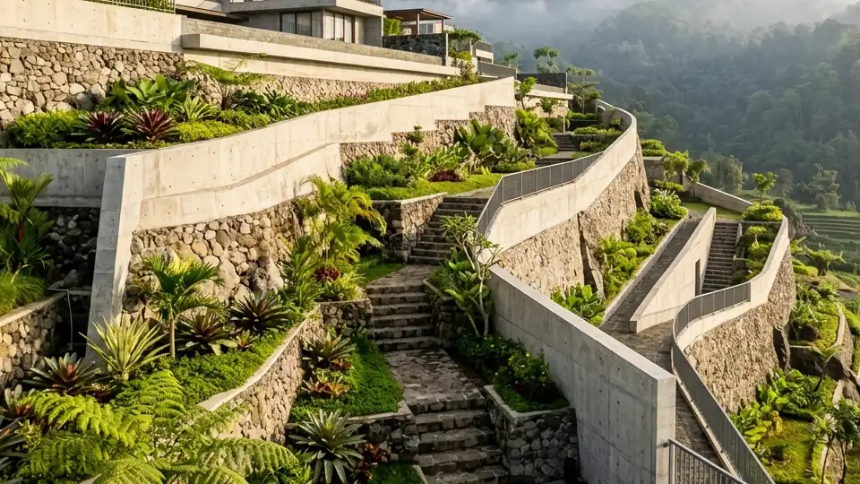

Ringkasan Inti
- Arsitek struktur bertanggung jawab menganalisis beban dan tekanan tanah sebelum menentukan jenis retaining wall.
- Perhitungan struktur yang akurat membantu mencegah risiko keruntuhan pada lahan berkontur seperti di Batu.
- Koordinasi antara arsitek struktur dan arsitek desain penting untuk memastikan estetika dan keamanan berjalan seimbang.
- Pengawasan pelaksanaan di lapangan menjadi bagian penting dari tanggung jawab arsitek struktur.
Daftar Isi Artikel
Arsitek struktur Malang berperan menganalisis beban tanah dan merancang retaining wall yang tepat agar lahan kontur di Batu tetap stabil dan aman untuk dibangun.
Apa Peran Arsitek Struktur dalam Proyek Retaining Wall?
Arsitek struktur Malang memiliki peran krusial dalam proyek retaining wall di Batu, mulai dari analisis kondisi tanah hingga penyusunan perhitungan teknis yang menjadi dasar keamanan struktur penahan tanah.
Peran spesifik arsitek struktur dalam proyek ini:
- Melakukan analisis geoteknik untuk memahami karakteristik tanah dan tingkat kestabilan lahan yang akan dibangun.
- Menentukan jenis retaining wall yang sesuai berdasarkan tingkat kemiringan dan beban yang perlu ditahan.
- Menyusun perhitungan struktur detail, termasuk kebutuhan tulangan dan dimensi dinding penahan tanah.
- Melakukan pengawasan pelaksanaan konstruksi untuk memastikan hasil di lapangan sesuai dengan perhitungan desain.

Bagaimana Arsitek Struktur Menganalisis Kebutuhan Retaining Wall?
Arsitek struktur menganalisis kebutuhan retaining wall melalui serangkaian tahapan teknis yang mempertimbangkan kondisi tanah, beban bangunan, dan faktor lingkungan sekitar lahan di Batu.
Tahapan analisis yang umum dilakukan:
- Melakukan survei dan pengambilan sampel tanah untuk memahami karakteristik geoteknik lahan.
- Menghitung beban lateral tanah yang perlu ditahan berdasarkan tingkat kemiringan dan kedalaman galian.
- Menentukan jenis pondasi retaining wall yang sesuai dengan kondisi tanah, apakah memerlukan pondasi dalam atau dangkal.
- Mempertimbangkan faktor curah hujan dan drainase dalam perhitungan struktur untuk mengantisipasi tekanan air tambahan.
Catatan Arsitek Malang
Pembangunan retaining wall di kawasan berbukit Batu membutuhkan perhitungan drainase khusus seperti weep holes berkala dan lapisan subdrain gravel. Hal ini krusial untuk mencegah penumpukan tekanan hidrostatis air hujan di balik dinding yang sering memicu keretakan struktur. Pastikan uji sondir tanah dan perhitungan mekanika tanah disahkan oleh arsitek struktur berlisensi sebelum pekerjaan galian tanah dimulai.
Kenapa Perhitungan Struktur Penting untuk Lahan Kontur di Batu?
Perhitungan struktur yang akurat sangat penting untuk lahan kontur di Batu karena kesalahan perhitungan dapat berakibat fatal, mulai dari keretakan hingga risiko keruntuhan struktur penahan tanah.
Alasan pentingnya perhitungan struktur yang tepat:
- Kondisi tanah di kawasan berbukit seperti Batu memiliki variasi karakteristik yang membutuhkan analisis spesifik per lokasi.
- Kesalahan perhitungan beban dapat menyebabkan retaining wall tidak mampu menahan tekanan tanah dalam jangka panjang.
- Curah hujan tinggi di kawasan pegunungan menambah kompleksitas perhitungan terkait tekanan air pada struktur penahan tanah.
- Keamanan penghuni bangunan di atas maupun di sekitar retaining wall sangat bergantung pada ketepatan perhitungan struktural.
Bagaimana Koordinasi Arsitek Struktur dan Arsitek Desain Berjalan?
Koordinasi antara arsitek struktur dan arsitek desain penting untuk memastikan retaining wall tidak hanya aman secara teknis, tetapi juga selaras dengan konsep estetika keseluruhan bangunan.
Bentuk koordinasi yang umum dilakukan:
- Arsitek desain menyampaikan konsep visual yang diinginkan, kemudian arsitek struktur menyesuaikan perhitungan teknis agar tetap dapat direalisasikan.
- Diskusi mengenai material finishing retaining wall, seperti penggunaan batu alam, yang perlu mempertimbangkan aspek struktural sekaligus estetika.
- Evaluasi bersama terhadap dampak desain terhadap kebutuhan struktur, misalnya penyesuaian ketinggian dinding penahan tanah.
Arsitek struktur Malang memiliki peran penting dalam merancang retaining wall yang aman untuk lahan kontur di Batu, mulai dari analisis geoteknik hingga pengawasan pelaksanaan konstruksi. Melibatkan arsitek struktur berpengalaman membantu memastikan retaining wall mampu menahan beban tanah secara optimal sekaligus selaras dengan konsep desain keseluruhan bangunan.
FAQ (Pertanyaan Sering Diajukan)
Apakah semua proyek retaining wall memerlukan arsitek struktur khusus?
Proyek retaining wall dengan tingkat kompleksitas tinggi sangat disarankan melibatkan arsitek struktur khusus untuk memastikan keamanan jangka panjang.
Berapa biaya jasa arsitek struktur untuk proyek retaining wall di Batu?
Biaya dapat bervariasi tergantung kompleksitas analisis dan perhitungan yang dibutuhkan, sehingga disarankan berkonsultasi langsung untuk estimasi yang akurat.
Apakah arsitek struktur juga terlibat dalam pengawasan konstruksi di lapangan?
Sebagian arsitek struktur menawarkan layanan pengawasan berkala, namun lingkup layanan ini perlu dikonfirmasi secara spesifik dalam kontrak kerja.
Konsultasikan Struktur Retaining Wall Lahan Anda di Batu
Dapatkan perhitungan beban tanah akurat, desain DED retaining wall kokoh, dan supervisi langsung bersama arsitek struktur Arsitek Malang.

Naura Regyna Putri
Penulis & Tim Riset Arsitektur Maroon Arsitek Malang, spesialis geoteknik kontur, retaining wall, perencanaan tata ruang lereng, dan estimasi biaya konstruksi di Malang Raya.